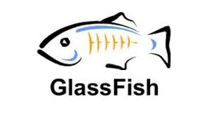

La evolución del software está marcando una tendencia muy fuerte al desarrollo de aplicaciones web, esto se debe a la facilidad de despliegue de las aplicaciones sobre los diferentes Exploradores Web. Estos exploradores presentan una ventaja de compatibilidad y portabilidad sobre los diferentes sistemas operativos, reduciendo los requisitos de uso del software a tener un explorador web instalado en las maquinas. Gracias a esto las aplicaciones web han tomado una gran popularidad dentro del mercado del software, desde videojuegos, redes sociales, hasta aplicaciones empresariales. Por estas razones es imperativo que los estudiantes de ingeniería de sistemas sean versátiles y flexibles, y tengan la capacidad de moverse dentro de diferentes lenguajes y plataformas de desarrollo web.
Comprender algunas de las tecnologías de desarrollo web de los últimos tiempos, conocer sus funcionalidades y limitaciones para plantear y desarrollar proyectos innovadores en el campo de las aplicaciones web. Se espera que el estudiante domine las aplicaciones Web.
|
Hasta el momento se han vistos algunos temas como lo son git, todo el manejo de repositorios y versiones, glassfish y maven. |
||
| GIT | GLASSFISH | MAVEN |
|  | ||